<title>Adding and renaming a tracker</title>
<meta name="claude:viewport-fit-sides" content="cover">
<link rel="stylesheet" href="tokens.css">
<!-- A mockup (design-system skill, references/mockups.md). Every picture is the real app, signed in
     as the demo account, with the proposal drawn into its page before the screenshot. -->
<style>
  body { margin: 0; background: var(--canvas); color: var(--ink); font-family: var(--font-sans); }
  .mockup-page { padding-left: max(16px, env(safe-area-inset-left, 0px)); padding-right: max(16px, env(safe-area-inset-right, 0px));
    padding-block: var(--space-8, 32px) var(--space-16, 64px); max-width: 1360px; margin: 0 auto; display: grid; gap: var(--space-12, 48px); }
  .mockup-head { display: grid; gap: var(--space-2, 8px); max-width: 70ch; }
  .mockup-head h1, .option h2, .option h3 { margin: 0; text-wrap: balance; }
  .mockup-head p, .option p, .option li { margin: 0; }
  .option ul.points { margin: 0; padding-left: 1.2em; display: grid; gap: 4px; max-width: 75ch; }
  .mockup-meta { color: var(--ink-secondary); }
  .option { display: grid; gap: var(--space-4, 16px); border-top: 1px solid var(--line); padding-top: var(--space-8, 32px); }
  .option-head { display: flex; flex-wrap: wrap; align-items: baseline; gap: var(--space-2, 8px) var(--space-3, 12px); }
  .option-tag { color: var(--ink-secondary); }
  .option[data-recommended] .option-tag::after { content: " · Recommended"; color: var(--ink); }
  .decided { color: var(--ink-secondary); }
  .shots { display: grid; grid-template-columns: repeat(auto-fit, minmax(min(100%, 520px), 1fr)); gap: var(--space-4, 16px); }
  .phones { display: grid; grid-template-columns: repeat(auto-fit, minmax(min(100%, 260px), 330px)); gap: var(--space-4, 16px); }
  figure { margin: 0; min-width: 0; display: grid; gap: var(--space-2, 8px); align-content: start; }
  figure img { display: block; width: 100%; height: auto; border: 1px solid var(--line); border-radius: var(--radius-lg, 10px); }
  figcaption { color: var(--ink-secondary); }
  :focus-visible { outline: 2px solid var(--focus); outline-offset: 2px; }
</style>

<main class="mockup-page">
  <header class="mockup-head">
    <p class="caption mockup-meta">Mockup · 2026-11-14 · Tracker</p>
    <h1 class="title-1">Adding and renaming a tracker</h1>
    
    <p class="body">Trackers are yours now (K123): any number, each with a name and a kind. This page asks
      where "Add tracker" lives in Edit plan, and shows the form it opens and the pen that renames a
      tracker. Delete tracker is as decided (K122).</p>
    <p class="body decided"><strong>Decided:</strong> A, Add tracker in the bar (John, 14 November). Comment on the form and the pen.</p>
  </header>
  <section class="option" id="a" data-recommended aria-labelledby="a-h">
  <div class="option-head"><h2 class="title-2" id="a-h">A. Add tracker in the bar</h2><span class="label option-tag">Option A · Chosen</span></div>
  
  <p class="body">A bar action before Settings, shown only in Edit plan. It's always in reach, whichever tracker is on screen, and it says the action is about the whole week, not one tracker. On a phone the bar gains a fourth action.</p>
  <div class="shots">
<figure><figcaption class="caption">Desktop · Light</figcaption></figure>
<figure>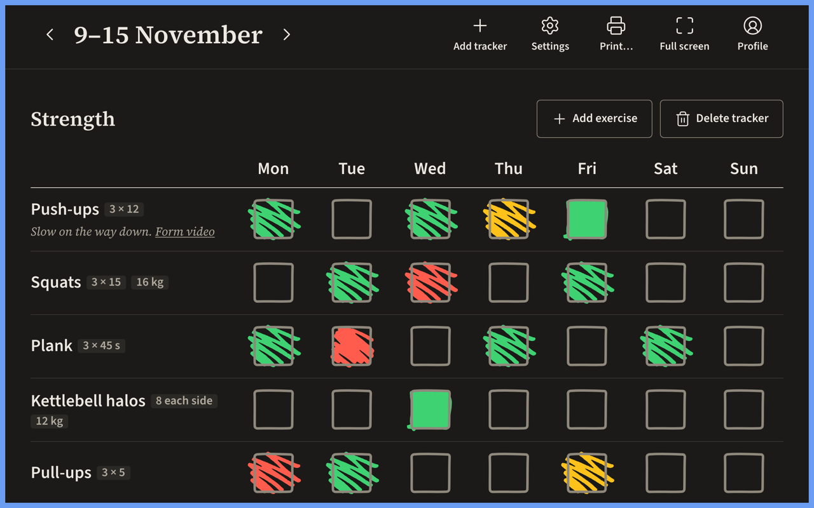<figcaption class="caption">Desktop · Dark</figcaption></figure>
</div>
<div class="phones">
<figure>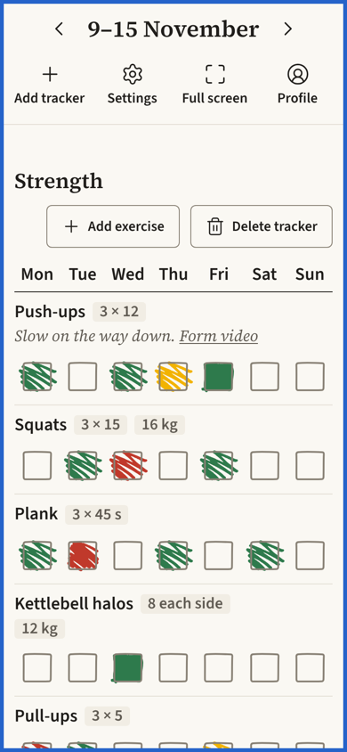<figcaption class="caption">Phone · Light</figcaption></figure>
<figure>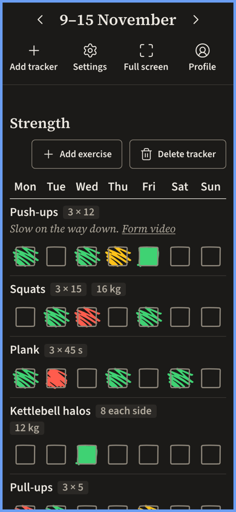<figcaption class="caption">Phone · Dark</figcaption></figure>
</div>
</section><section class="option" id="b" aria-labelledby="b-h">
  <div class="option-head"><h2 class="title-2" id="b-h">B. Add tracker under the last tracker</h2><span class="label option-tag">Option B</span></div>
  
  <p class="body">A button at the foot of the last tracker, where its arrow to the next tracker would be. A new tracker joins the end, so this is where it appears. You scroll to the last tracker to reach it.</p>
  <div class="shots">
<figure>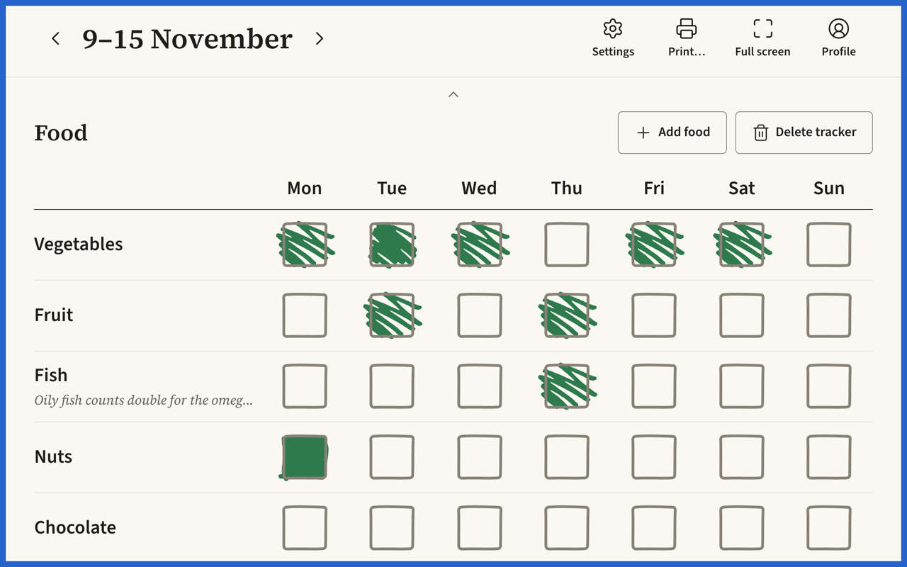<figcaption class="caption">Desktop · Light</figcaption></figure>
<figure>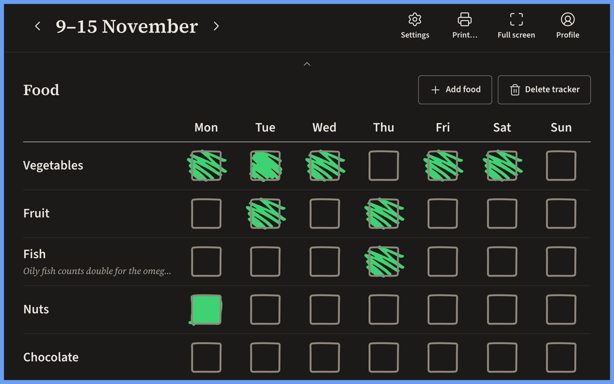<figcaption class="caption">Desktop · Dark</figcaption></figure>
</div>
<div class="phones">
<figure>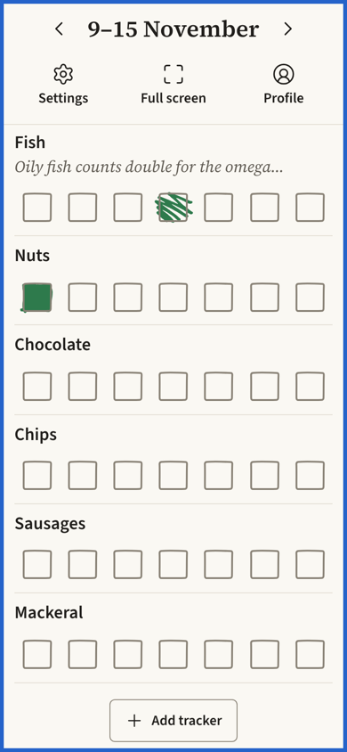<figcaption class="caption">Phone · Light</figcaption></figure>
<figure>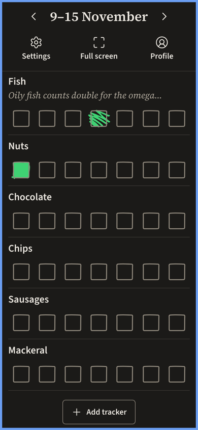<figcaption class="caption">Phone · Dark</figcaption></figure>
</div>
</section><section class="option" id="form" aria-labelledby="form-h">
  <div class="option-head"><h2 class="title-2" id="form-h">The new tracker page</h2><span class="label option-tag">Both options</span></div>
  
  <p class="body">Add tracker opens a page like the new item page (K104): the name, then the kind, as a SegmentedControl with a line under it saying what the chosen kind records. Add tracker starts it this week, empty, as the last tracker.</p>
  <ul class="points body">
    <li>Strength: sets, then reps or time, and weight. Marked great, partial or missed.</li>
    <li>Cardio: time and distance. Marked great, partial or missed.</li>
    <li>Food: a number of times a week. Marked eaten.</li>
    <li>Mobility: sets, then reps or a hold time, each side if you like. Marked great, partial or missed.</li>
  </ul>
  <p class="body">The kind is set once, because it decides what every item in the tracker records. A tracker with a daily goal (strength, food, mobility) sets it on its title line in Edit plan, as today.</p>
  <div class="shots">
<figure>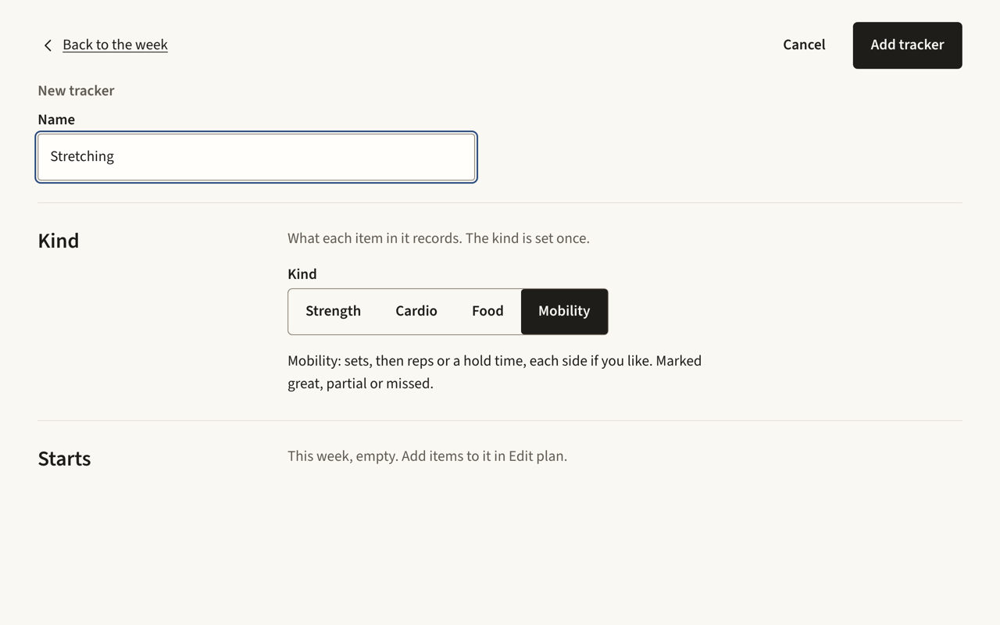<figcaption class="caption">Desktop · Light</figcaption></figure>
<figure>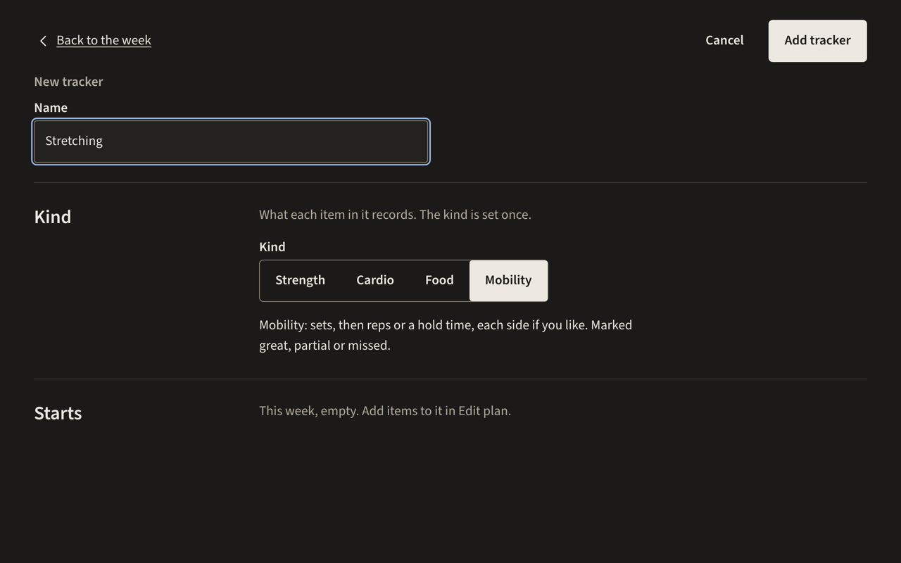<figcaption class="caption">Desktop · Dark</figcaption></figure>
</div>
<div class="phones">
<figure>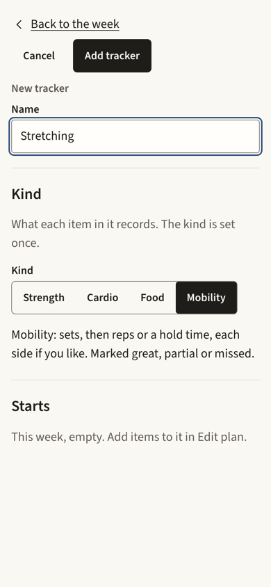<figcaption class="caption">Phone · Light</figcaption></figure>
<figure>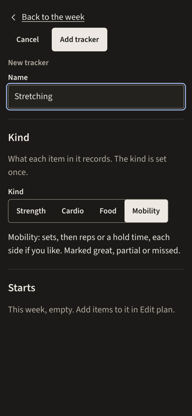<figcaption class="caption">Phone · Dark</figcaption></figure>
</div>
</section><section class="option" id="pen" aria-labelledby="pen-h">
  <div class="option-head"><h2 class="title-2" id="pen-h">Renaming a tracker</h2><span class="label option-tag">Both options</span></div>
  
  <p class="body">In Edit plan, the tracker's title has the same pen as an item's name (K121). Pressed, the title becomes a field in its own type, with Done. Enter or Done saves, and Escape puts the old name back. Outside Edit plan the title has no pen.</p>
  <div class="shots">
<figure>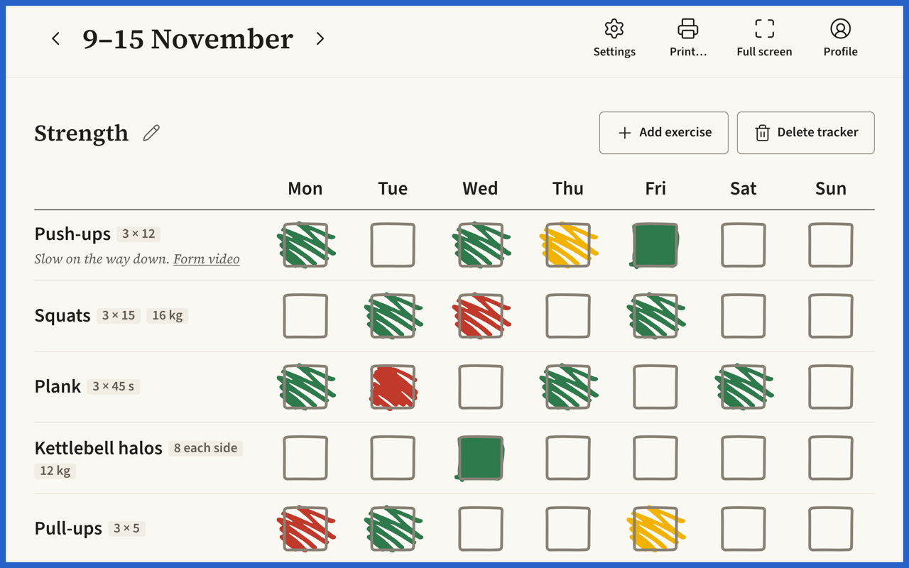<figcaption class="caption">Desktop · Light</figcaption></figure>
<figure>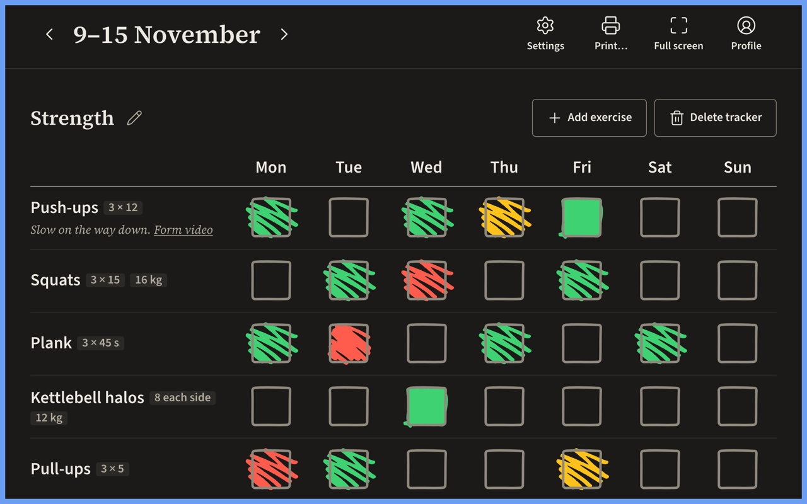<figcaption class="caption">Desktop · Dark</figcaption></figure>
</div>
<div class="phones">
<figure>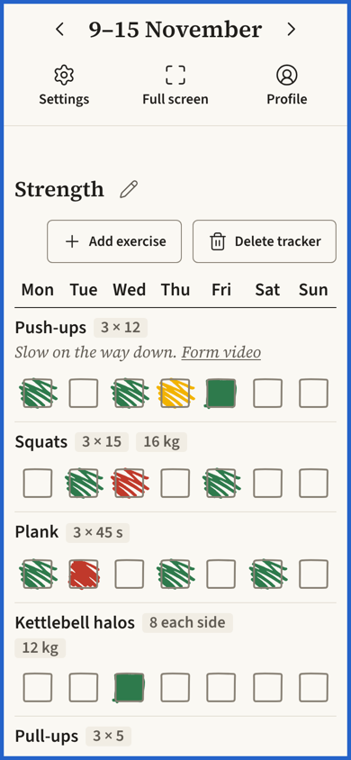<figcaption class="caption">Phone · Light</figcaption></figure>
<figure>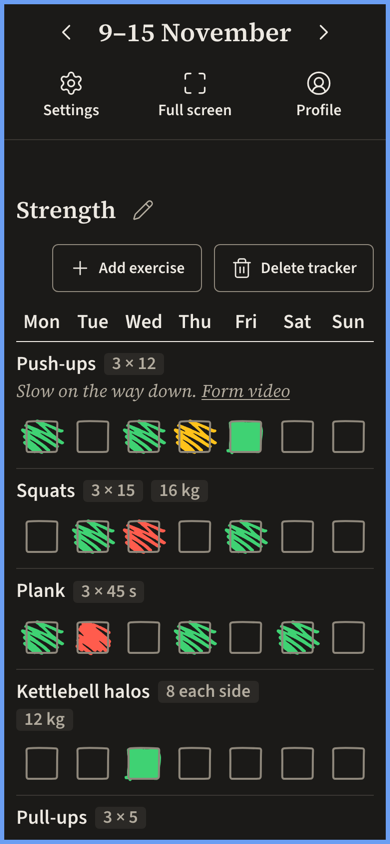<figcaption class="caption">Phone · Dark</figcaption></figure>
</div><div class="shots">
<figure>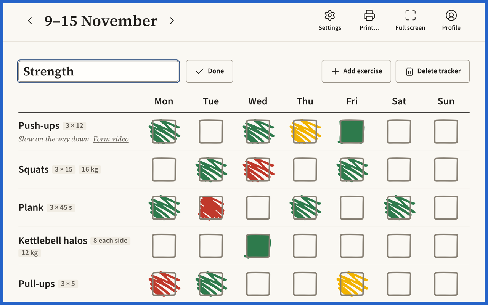<figcaption class="caption">Desktop · Light</figcaption></figure>
<figure>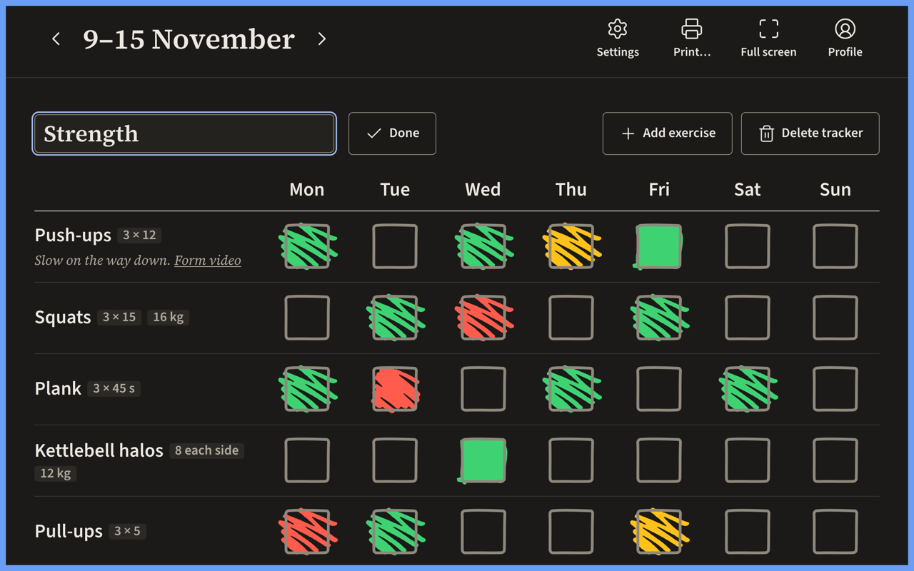<figcaption class="caption">Desktop · Dark</figcaption></figure>
</div>
<div class="phones">
<figure>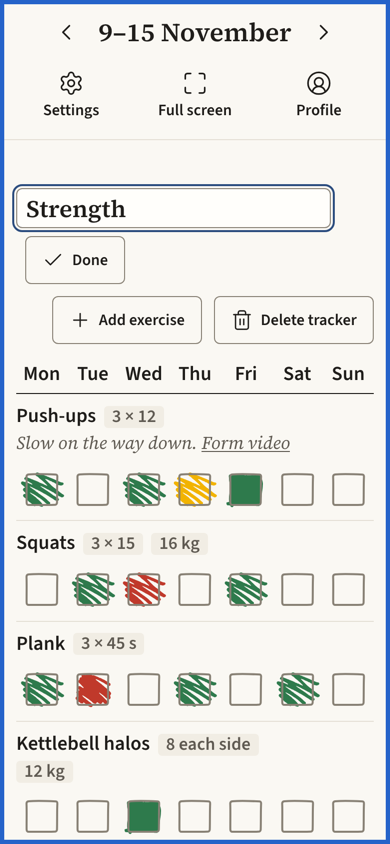<figcaption class="caption">Phone · Light</figcaption></figure>
<figure>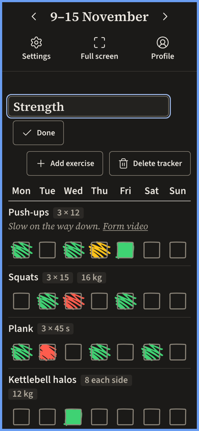<figcaption class="caption">Phone · Dark</figcaption></figure>
</div>
</section>
</main>
